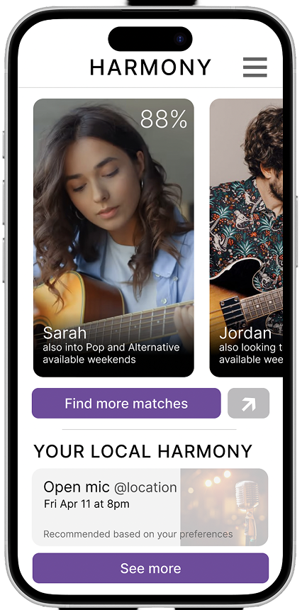
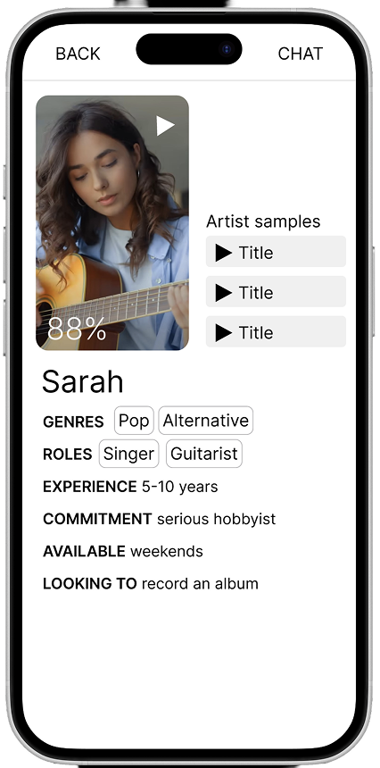
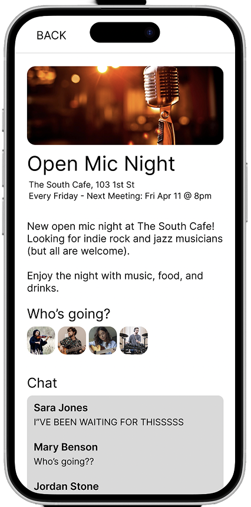
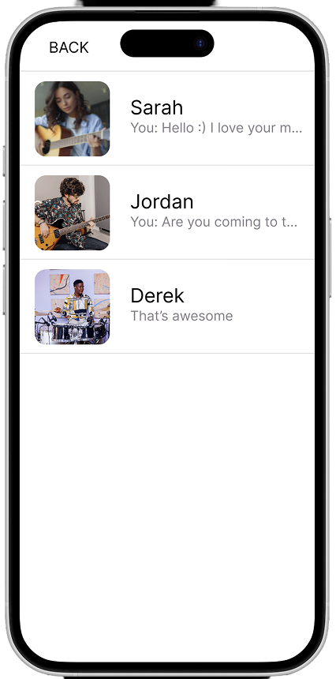
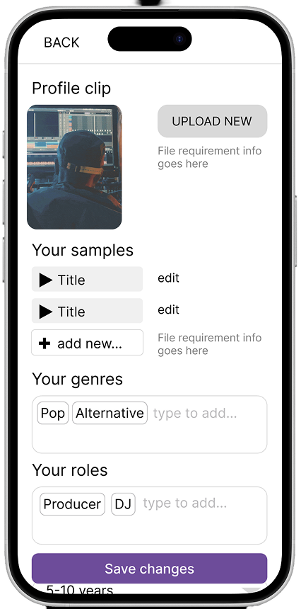
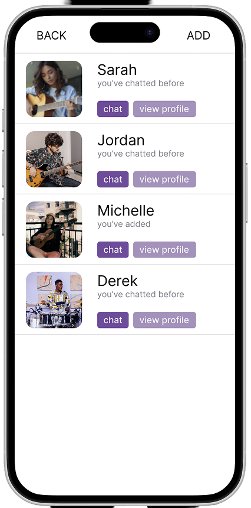

Harmony
Existing music platforms prioritize listening over connecting — leaving musicians with no dedicated space to find collaborators, attend local events, or build a presence around their actual skills and availability.
Conducting user research with various musicians, I designed five distinct task flows — a compatibility quiz, searchable artist profiles, a local events forum, a real-time chat interface, and a collaborators menu — each refined through structured usability testing.
Each design decision was driven by real participant feedback, resulting in a prototype that evolved significantly from low fidelity to high fidelity — proving the value of iterative, research-driven design in a collaborative team setting.